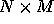
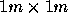
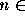
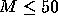
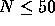
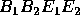
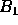
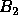
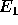
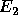

| Robot |
The Robot Moving Institute is using a robot in their local store to transport
different items.
Of course the robot should spend only the minimum time necessary when
travelling from one place
in the store to another. The robot can move only along a straight line (track).
All tracks form a
rectangular grid. Neighbouring tracks are one meter apart. The store is a
rectangle  meters
and it is entirely covered by this grid. The distance of the track closest
to the side of the store is
exactly one meter. The robot has a circular shape with diameter equal
to 1.6 meter. The track
goes through the center of the robot. The robot always faces north, south,
west or east. The tracks
are in the south-north and in the west-east directions. The robot can
move only in the direction
it faces. The direction in which it faces can be changed at each track
crossing. Initially the robot
stands at a track crossing. The obstacles in the store are formed from
pieces occupying 
on the ground. Each obstacle is within a  square formed by the
tracks. The movement of the
robot is controlled by two commands. These commands are GO and TURN.
square formed by the
tracks. The movement of the
robot is controlled by two commands. These commands are GO and TURN.
The GO command has one integer parameter  {1,2,3}. After receiving this command the robot moves n meters in the direction it faces.
The TURN command has one parameter which is either left or right. After receiving this command the robot changes its orientation by 90o in the direction indicated by the parameter.
The execution of each command lasts one second.
Help researchers of RMI to write a program which will determine the minimal time in which the robot can move from a given starting point to a given destination.
The input file consists of blocks of lines. The first line of each block contains two integers  and  separated by one space. In each of the next M lines there are N numbers one or zero separated by one space. One represents obstacles and zero represents empty squares. (The tracks are between the squares.) The block is terminated by a line containing four positive integers  each followed by one space and the word indicating the orientation of the robot at the starting point.  ,  are the coordinates of the square in the north-west corner of which the robot is placed (starting point).  ,  are the coordinates of square to the north-west corner of which the robot should move (destination point). The orientation of the robot when it has reached the destination point is not prescribed. We use (row, column)-type coordinates, i.e. the coordinates of the upper left (the most north-west) square in the store are 0,0 and the lower right (the most south-east) square are M - 1, N - 1. The orientation is given by the words north or west or south or east. The last block contains only one line with N = 0 and M = 0.
The output file contains one line for each block except the last block in the input file. The lines are in the order corresponding to the blocks in the input file. The line contains minimal number of seconds in which the robot can reach the destination point from the starting point. If there does not exist any path from the starting point to the destination point the line will contain -1.

9 10 0 0 0 0 0 0 1 0 0 0 0 0 0 0 0 0 0 0 1 0 0 0 0 1 0 0 0 0 0 0 0 0 1 0 0 0 0 0 0 0 0 0 0 0 0 0 1 0 0 0 0 0 0 0 0 1 0 0 0 0 0 0 0 1 1 0 0 0 0 0 0 0 0 0 0 0 0 0 0 0 1 0 0 0 0 0 0 0 1 0 7 2 2 7 south 0 0
12